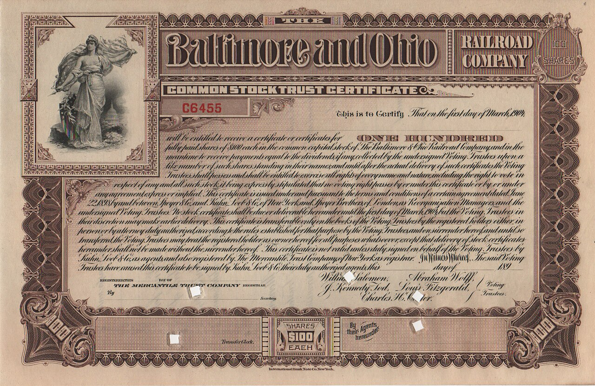

Edukasi: Apa itu saham tokenisasi dan perpetual saham? Bedanya, cara kerjanya, dan risikonyaExplainer: What are tokenized stocks and stock perpetuals? The differences, how they work, and the risks
Saham AS versi token akan diperdagangkan 24/7 di blockchain, sementara perpetual futures saham sedang diperebutkan di pengadilan AS. Keduanya sama-sama "saham di dunia crypto", tapi isinya sangat berbeda. Ini penjelasan sederhana berdasarkan dokumen resmi SEC dan pengadilan.Tokenized US stocks are set to trade 24/7 on blockchain, while single-stock perpetual futures are being fought over in a US court. Both are "stocks in the crypto world", but they are very different. Here is a simple explanation based on official SEC and court documents.

Poin utamaKey points
- Saham tokenisasi adalah efek (misalnya saham) yang dicatat atau diwakili dalam bentuk aset crypto di blockchain. Menurut staf SEC, formatnya tidak mengubah status hukumnya: saham tetap saham.
- Staf SEC membagi model tokenisasi menjadi dua: dibuat oleh emiten sendiri, atau dibuat pihak ketiga. Model pihak ketiga ada dua jenis: kustodian (token mewakili saham asli yang disimpan) dan sintetis (token hanya memberi eksposur harga).
- Perpetual futures (perp) adalah kontrak derivatif tanpa tanggal jatuh tempo. Pemegangnya tidak memiliki saham, hanya bertaruh pada naik-turunnya harga, sering dengan leverage.
- "Innovation exemption" SEC (17 Sep 2026) mengizinkan venue khusus memperdagangkan saham tokenisasi lewat AMM, dengan syarat antara lain hak pemegang token sama dengan saham biasa dan emiten bisa menolak jika tokenisasi dilakukan pihak ketiga.
- Pada 3 Nov 2026, seorang hakim federal AS menilai perpetual saham kemungkinan bukan "security future" melainkan swap yang diatur SEC, sehingga status hukumnya di AS masih diperdebatkan.
- A tokenized stock is a security (for example a share) recorded or represented as a crypto asset on a blockchain. According to SEC staff, the format does not change its legal status: a stock is still a stock.
- SEC staff divide tokenization models into two: created by the issuer itself, or created by a third party. Third-party models come in two types: custodial (the token represents a real share held in custody) and synthetic (the token only provides price exposure).
- Perpetual futures (perps) are derivative contracts with no expiry date. Holders do not own the stock; they only bet on price moves, often with leverage.
- The SEC's "innovation exemption" (17 Sep 2026) allows special venues to trade tokenized stocks through AMMs, on conditions including that token holders have the same rights as ordinary shareholders and that issuers can object if tokenization is done by a third party.
- On 3 Nov 2026, a US federal judge found that stock perpetuals are likely not a "security future" but a swap regulated by the SEC, so their legal status in the US is still contested.
Belakangan istilah "saham tokenisasi" makin sering muncul. Contoh terbarunya, OKXICE, perusahaan patungan OKX dan induk NYSE, akan memperdagangkan saham AS versi token mulai 23 November. Di saat yang sama, ada produk lain yang juga "berbau saham" di dunia crypto: perpetual futures saham. Keduanya sering disamakan, padahal sangat berbeda.
Mulai dari definisinya. Dalam pernyataan staf tiga divisi SEC tanggal 28 Januari 2026, tokenized security didefinisikan sebagai instrumen keuangan yang termasuk "efek" menurut hukum AS, yang diformat sebagai atau diwakili oleh aset crypto, dengan catatan kepemilikan disimpan sebagian atau seluruhnya di jaringan crypto. Staf SEC menegaskan bahwa format tidak mengubah penerapan hukum sekuritas: saham tetap dianggap saham, apa pun bentuknya.
Menurut staf SEC, ada dua kategori besar. Pertama, saham yang ditokenisasi oleh emiten sendiri (atau agennya), misalnya ketika daftar pemegang saham resmi perusahaan dicatat langsung di blockchain. Kedua, saham yang ditokenisasi oleh pihak ketiga yang tidak terafiliasi dengan emiten. Kategori kedua ini dibagi lagi: model kustodian, di mana saham asli disimpan oleh kustodian dan token membuktikan kepemilikan atas saham itu; dan model sintetis, di mana pihak ketiga menerbitkan efeknya sendiri yang hanya memberi eksposur harga, misalnya linked security atau security-based swap. Staf SEC mengingatkan bahwa pada model pihak ketiga, pemegang token bisa terkena risiko terkait pihak ketiga tersebut, seperti kebangkrutan, yang tidak dialami pemegang saham biasa.
Lalu bagaimana saham tokenisasi diperdagangkan? Pada 17 September 2026, SEC mengeluarkan "Innovation Exemption", pengecualian sementara yang mengizinkan Tokenized Securities Venue (TSV) memperdagangkan saham tokenisasi lewat automated market maker (AMM) dan pool likuiditas. Syaratnya antara lain: jumlah simbol dan volume dibatasi, token harus memberi hak yang sama dengan saham biasa di kelas yang setara, emiten harus diberi pemberitahuan dan kesempatan menolak jika tokenisasi dilakukan pihak ketiga, smart contract harus publik dan bisa diaudit, dan perdagangan token harus berhenti bersamaan dengan penghentian perdagangan saham aslinya di bursa utama. Pengecualian ini berlaku lima tahun.
Perpetual futures berbeda total. Ini adalah kontrak derivatif yang tidak punya tanggal jatuh tempo. Pemegang kontrak tidak memiliki saham dan tidak mendapat dividen atau hak suara; ia hanya mendapat untung atau rugi dari pergerakan harga. Di pasar crypto, perp biasanya memakai mekanisme funding rate, yaitu pembayaran berkala antara pihak long dan short, dan sering dipakai dengan leverage, sehingga posisi bisa dilikuidasi jika harga bergerak berlawanan.
Status perp saham di AS sedang diuji di pengadilan. Dalam perkara Capital Markets Alliance Association v. CFTC, hakim Valerie Caproni pada 3 November 2026 menolak permohonan perintah darurat, tetapi menilai penggugat kemungkinan besar benar bahwa kontrak perpetual atas saham tunggal tidak memenuhi definisi security future, karena tidak menjanjikan penyerahan saham di tanggal tertentu, dan lebih tampak sebagai swap yang diatur SEC. Perkara ini masih berjalan, dan SEC ikut mengajukan amicus brief pada 9 November.
Lately the term "tokenized stocks" has been showing up more often. The latest example is OKXICE, the joint venture of OKX and NYSE's parent, which will trade tokenized US stocks from 23 November. At the same time, there is another "stock-like" product in the crypto world: single-stock perpetual futures. The two are often lumped together, yet they are very different.
Start with the definition. In a staff statement from three SEC divisions dated 28 January 2026, a tokenized security is defined as a financial instrument that is a "security" under US law, formatted as or represented by a crypto asset, with ownership records kept in whole or in part on a crypto network. SEC staff stress that the format does not change how securities law applies: a stock is still treated as a stock, whatever its form.
According to SEC staff, there are two broad categories. First, stocks tokenized by the issuer itself (or its agent), for example when the company's official shareholder register is recorded directly on a blockchain. Second, stocks tokenized by a third party not affiliated with the issuer. This second category is split further: the custodial model, where the real share is held by a custodian and the token evidences ownership of that share; and the synthetic model, where the third party issues its own security that only provides price exposure, such as a linked security or a security-based swap. SEC staff warn that in third-party models, token holders may be exposed to risks related to that third party, such as bankruptcy, which ordinary shareholders would not face.
So how are tokenized stocks traded? On 17 September 2026, the SEC issued the "Innovation Exemption", a temporary exemption allowing Tokenized Securities Venues (TSVs) to trade tokenized stocks through automated market makers (AMMs) and liquidity pools. Conditions include: limits on the number of symbols and volume, tokens must give the same rights as ordinary shares of an equivalent class, issuers must be given notice and a chance to object if tokenization is done by a third party, smart contracts must be public and auditable, and token trading must stop whenever trading in the underlying stock stops on the primary listing exchange. The exemption lasts five years.
Perpetual futures are completely different. They are derivative contracts with no expiry date. Contract holders do not own the stock and receive no dividends or voting rights; they only make a profit or loss from price moves. In crypto markets, perps usually use a funding rate mechanism, periodic payments between longs and shorts, and are often used with leverage, so positions can be liquidated if the price moves against them.
The status of stock perps in the US is being tested in court. In Capital Markets Alliance Association v. CFTC, Judge Valerie Caproni on 3 November 2026 denied an emergency order request, but found the plaintiff likely right that perpetual contracts on single stocks do not meet the definition of a security future, because they do not provide for delivery of the stock on a set date, and appear instead to be swaps regulated by the SEC. The case is ongoing, and the SEC filed an amicus brief on 9 November.
Kenapa pentingWhy it matters
Semakin banyak platform crypto menawarkan "saham" dalam berbagai bentuk. Memahami bedanya membantu kamu tahu apa yang sebenarnya kamu pegang: saham asli dengan hak dividen, token yang bergantung pada pihak ketiga, atau sekadar kontrak taruhan harga dengan leverage.More and more crypto platforms are offering "stocks" in various forms. Understanding the differences helps you know what you actually hold: a real share with dividend rights, a token that depends on a third party, or just a leveraged price-betting contract.
Cek sebelum membeli "saham versi crypto"Check before buying "crypto-style stocks"
- Tanyakan: apakah token ini didukung saham asli (1:1) atau hanya eksposur harga (sintetis/derivatif)?
- Cek hak yang kamu dapat: dividen, hak suara, dan corporate action. Perp tidak memberi hak-hak ini.
- Kenali pihak penerbit dan kustodiannya, karena ada risiko pihak ketiga seperti kebangkrutan.
- Cek apakah produk itu memang tersedia untuk negaramu. OKXICE, misalnya, awalnya hanya untuk nasabah di AS.
- Untuk pengguna Indonesia, pakai platform yang terdaftar dan diawasi OJK, dan hati-hati memakai leverage.
- Ask: is this token backed by a real share (1:1) or does it only give price exposure (synthetic/derivative)?
- Check the rights you get: dividends, voting rights and corporate actions. Perps do not give these rights.
- Know the issuer and custodian, because there are third-party risks such as bankruptcy.
- Check whether the product is actually available in your country. OKXICE, for example, is initially only for US customers.
- For users in Indonesia, use platforms registered with and supervised by OJK, and be careful with leverage.
Saham tokenisasi dan perp saham sama-sama membawa pasar saham ke jam 24/7 ala crypto, tetapi risikonya berbeda: saham tokenisasi model kustodian paling mirip memegang saham asli, sedangkan perp adalah instrumen spekulasi dengan leverage. Aturan di AS juga masih bergerak, jadi produk yang ada hari ini bisa berubah. Ini edukasi, bukan saran investasi.Tokenized stocks and stock perps both bring the stock market into crypto-style 24/7 hours, but their risks differ: custodial tokenized stocks are closest to holding a real share, while perps are speculative instruments with leverage. US rules are also still moving, so products that exist today may change. This is education, not investment advice.
FotoPhotos
Foto: sertifikat saham Baltimore and Ohio Railroad, 1904 (Baltimore and Ohio Railroad, domain publik); papan jalan Wall Street, New York (Alex Proimos, CC BY 2.0). Via Wikimedia Commons. Foto ilustrasi.Photos: Baltimore and Ohio Railroad stock certificate, 1904 (Baltimore and Ohio Railroad, public domain); Wall Street street sign, New York (Alex Proimos, CC BY 2.0). Via Wikimedia Commons. Illustrative photos.
SumberSources
- SEC: Statement on Tokenized Securities (28 Jan 2026)
- SEC: SEC Issues "Innovation Exemption" to Facilitate the Trading of Tokenized NMS Stock (17 Sep 2026)
- SEC: Innovation Exemption
- CourtListener: Capital Markets Alliance Association v. CFTC (perintah 3 Nov 2026)
- CoinDesk: OKXICE to debut tokenized stock trading this month
- K33 Research: Ripe for a squeeze (funding rate dan likuidasi)
Ikuti COIN BRO diFollow COIN BRO on Telegram
Dapatkan berita seperti ini lebih cepat di channel kami. Gratis.Get news like this faster on our channel. Free.
Bukan saran finansial. Artikel ini adalah informasi dan edukasi, bukan ajakan membeli atau menjual aset apa pun. Aset kripto berisiko tinggi. Fakta mengikuti sumber yang tercantum; bagian berlabel interpretasi adalah pendapat, bukan fakta. Menemukan kesalahan? Lihat kebijakan koreksi.Not financial advice. This article is information and education, not a solicitation to buy or sell any asset. Crypto assets are high risk. Facts follow the listed sources; sections labeled interpretation are opinion, not fact. Found an error? See our corrections policy.